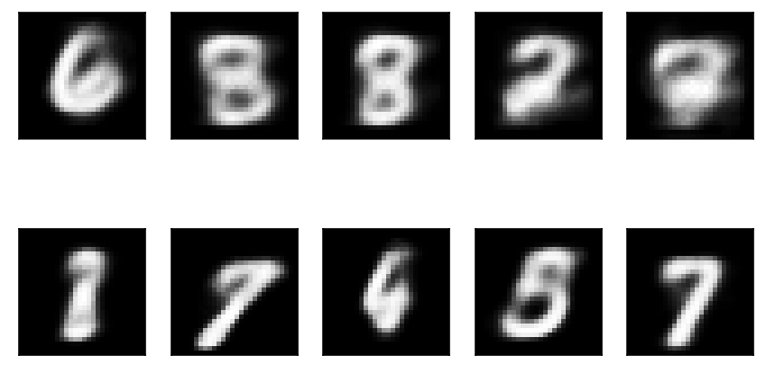
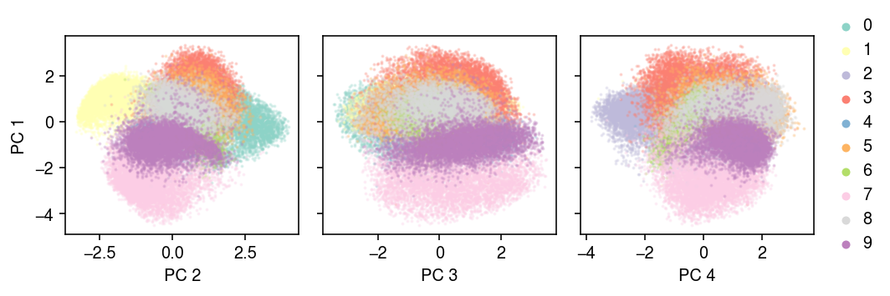
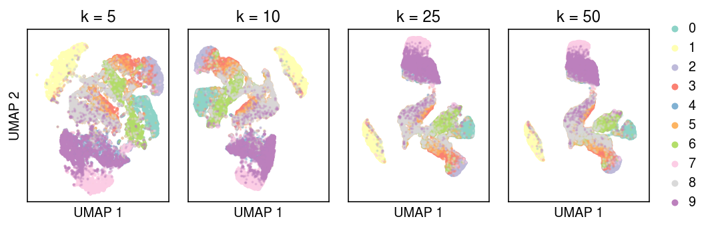
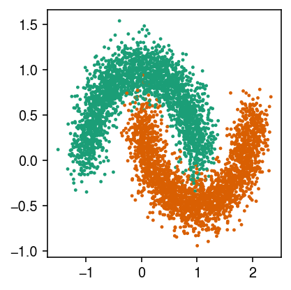
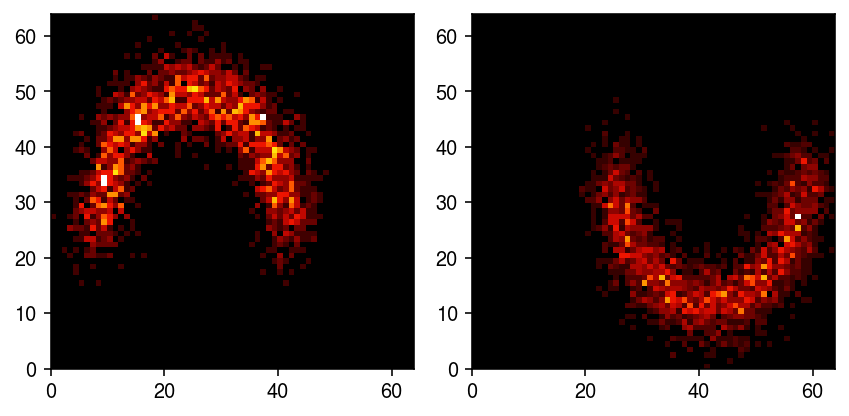
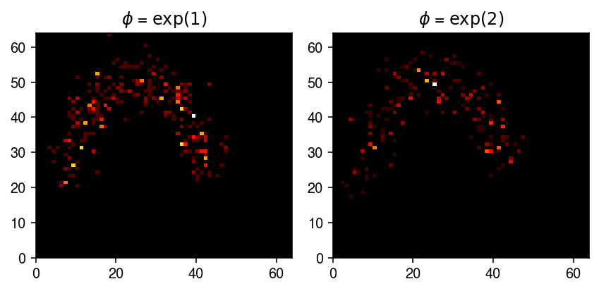
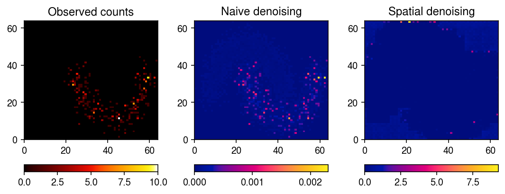
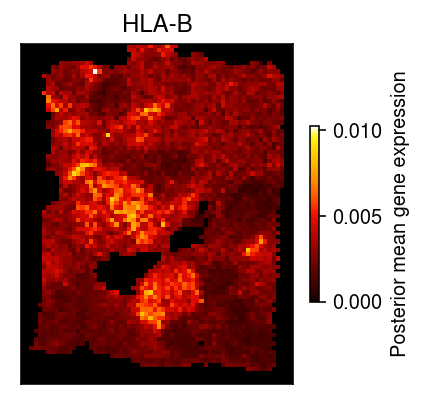
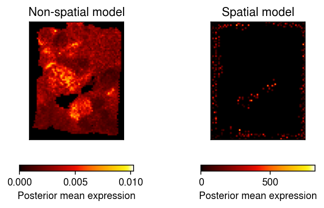

Convolutional VAE for spatial transcriptomic data
Table of Contents
Introduction
There is great interest in analyzing transcriptomic profiles in complex tissues measured at single (or few) cell resolution jointly with associated spatial information (Ståhl et al. 2016, Vikovic et al. 2019, Rodriques et al. 2019). Such analysis could elucidate the molecular basis for the spatial organization of cell types/states (Moor and Itzkovitz 2017, Lein et al. 2017), and could be useful for genomics-based histology. Existing statistical methods for analyzing spatial transcriptomic data are largely based on Gaussian processes (Svensson et al. 2018, Edsgärd et al. 2018, Sun et al. 2020). These methods have proven to be successful in identifying genes that exhibit statistically significant spatial patterns of gene expression (compared to a null model of no structured spatial variation). However, these methods analyze one gene at a time, and therefore lose information on gene co-expression within and between samples. Further, they rely on a statistical test to prioritize genes that could be relevant to observed spatial structures (e.g., in associated imaging data).
For spatial transcriptomic data that are collected on a regular grid, we can instead use convolutional neural networks (CNNs; Denker et al. 1989, LeCun et al. 1989) to learn spatial structure. There are several advantages to the convolutional approach.
- A single model can be learned on all genes, and therefore can exploit covariance of gene expression induced by the gene regulatory network.
- The model can learn a lower-dimensional representation of spatial expression patterns, which can be used to identify genes with highly similar spatial expression patterns
- With associated imaging data, the convolutional filters can be jointly learned between image features and gene expression features, which can more directly associate cell type/state differences at the expression level with e.g., differences in morphology.
The key idea of our approach is to combine a Poisson measurement model (Sarkar and Stephens 2020),
\begin{equation} \newcommand\Pois{\operatorname{Pois}} \newcommand\N{\mathcal{N}} \newcommand\vx{\mathbf{x}} \newcommand\vz{\mathbf{z}} x_{ij} \mid s_i, \lambda_{ij} \sim \Pois(s_i \lambda_{ij}) \end{equation}with a spatial expression model,
\begin{equation} \lambda_{ij} \mid \vz_j = (h(\vz_j))_i, \end{equation}where \(h\) denotes a CNN. To perform approximate Bayesian inference (on \(\vz_j\)), we treat \(h\) as a decoder network in a variational autoencoder (Kingma and Welling 2014) and introduce an encoder network
\begin{equation} \vz_j \mid \vx_{\cdot j} \sim \N(\mu(\vx_{\cdot j}), \sigma^2(\vx_{\cdot j})), \end{equation}where \(\mu, \sigma^2\) are also CNNs (Salimans et al. 2014). Unlike existing application of VAEs to scRNA-seq data (e.g., Lopez et al. 2018), in the spatial transcriptomics setting, inference is done over minibatches of genes rather than samples.
The learned VAE can be used to answer several questions of interest:
- What are the predominant patterns of spatial gene expression? These are learned as the low dimensional spatial representations of each gene \(\vz_j\).
- Which spatial structures define those patterns? These can be recovered using e.g., saliency maps to associate learned convolutional filters with the specific latent variable \(\vz_j\) of interest.
- Which genes co-vary spatially? These can be recovered by clustering the learned \(\vz_j\).
Setup
import anndata import numpy as np import pandas as pd import scanpy as sc import scipy.io as si import scipy.sparse as ss import sklearn.datasets as skd import scmodes import torch import torch.utils.data as td import torch.utils.tensorboard as tb import torchvision as tv import umap
%matplotlib inline %config InlineBackend.figure_formats = set(['retina'])
import colorcet import matplotlib.colors as mc import matplotlib.pyplot as plt plt.rcParams['figure.facecolor'] = 'w' plt.rcParams['font.family'] = 'Nimbus Sans'
Methods
Data
- Breast cancer (10X Genomics Visium v1.1.0)
- Human DPFC (10X Genomics Visium; Maynard et al. 2021)
- Mouse olfactory bulb (HDST; Vikovic et al. 2019)
- Human spinal cord (Maniatis et al. 2019)
- Mouse cerebellum (SLIDE-Seq; Rodriques et al. 2019)
- Human pancreatic ducal adinocarcinoma (ST; Moncada et al., 2018)
- Human gingival tissue (ST; Lundmark et al. 2018)
- Human prostate cancer (ST; Berglund et al. 2018)
- Human melanoma (ST; Thrane et al. 2018)
- Human heart (ST; Asp et al. 2017)
- Human breast cancer (ST; Ståhl et al. 2016)
- Mouse olfactory bulb (ST; Ståhl et al. 2016)
Implementation
class Encoder(torch.nn.Module): def __init__(self, input_h, input_w, output_dim): super().__init__() self.net = torch.nn.Sequential( torch.nn.Conv2d(in_channels=1, out_channels=16, kernel_size=3, padding=1, stride=2), torch.nn.ReLU(), torch.nn.Conv2d(in_channels=16, out_channels=32, kernel_size=3, padding=1, stride=2), torch.nn.ReLU(), torch.nn.Flatten(), torch.nn.Linear(32 * input_h * input_w // 16, 1024), torch.nn.ReLU(), torch.nn.Linear(1024, 512), torch.nn.ReLU(), ) self.mean = torch.nn.Linear(512, output_dim) self.scale = torch.nn.Sequential( torch.nn.Linear(512, output_dim), torch.nn.Softplus()) def forward(self, x): h = self.net(x) return self.mean(h), self.scale(h) class Reshape(torch.nn.Module): def __init__(self, shape): super().__init__() self.shape = shape def forward(self, x): return torch.reshape(x, self.shape) class Decoder(torch.nn.Module): def __init__(self, input_dim, output_h, output_w): super().__init__() self.net = torch.nn.Sequential( torch.nn.Linear(input_dim, 512), torch.nn.ReLU(), torch.nn.Linear(512, 1024), torch.nn.ReLU(), torch.nn.Linear(1024, 32 * output_h * output_w // 16), torch.nn.ReLU(), Reshape([-1, 32, output_h // 4, output_w // 4]), torch.nn.ConvTranspose2d(in_channels=32, out_channels=16, kernel_size=3, stride=2, padding=1, output_padding=1), torch.nn.ReLU(), torch.nn.ConvTranspose2d(in_channels=16, out_channels=1, kernel_size=3, stride=2, padding=1, output_padding=1), torch.nn.Sigmoid(), ) self.output_h = output_h self.output_w = output_w def forward(self, x): return self.net(x) class ConvVAE(torch.nn.Module): def __init__(self, input_h, input_w, latent_dim): super().__init__() self.encoder = Encoder(input_h, input_w, latent_dim) self.decoder = Decoder(latent_dim, input_h, input_w) def forward(self, x, n_samples, writer=None, global_step=None): mean, scale = self.encoder(x) kl = torch.sum(.5 * (1 - 2 * torch.log(scale) + (mean * mean + scale * scale)), dim=1) qz = torch.distributions.Normal(mean, scale).rsample(n_samples) probs = self.decoder.forward(qz) error = torch.sum(torch.mean(x * torch.log(probs) + (1 - x) * torch.log(1 - probs), dim=1), dim=[1, 2]) if writer is not None: writer.add_scalar('loss/error', torch.sum(error), global_step) writer.add_scalar('loss/kl', torch.sum(kl), global_step) loss = -torch.sum(error - kl) if torch.isnan(loss): raise RuntimeError return loss def fit(self, data, n_epochs=5, n_samples=None, log_dir=None, **kwargs): if log_dir is None: writer = None else: writer = tb.SummaryWriter(log_dir) if n_samples is None: n_samples = torch.Size([1]) if torch.cuda.is_available(): self.cuda() opt = torch.optim.Adam(self.parameters(), **kwargs) global_step = 0 for epoch in range(n_epochs): for x, y in data: if torch.cuda.is_available(): x = x.cuda() opt.zero_grad() loss = self.forward(x, n_samples, writer, global_step) loss.backward() opt.step() global_step += 1 return self
class Pois(torch.nn.Module): def __init__(self, input_dim, output_h, output_w): super().__init__() self.net = torch.nn.Sequential( torch.nn.Linear(input_dim, 512), torch.nn.ReLU(), torch.nn.Linear(512, 1024), torch.nn.ReLU(), torch.nn.Linear(1024, 32 * output_h * output_w // 16), torch.nn.ReLU(), Reshape([-1, 32, output_h // 4, output_w // 4]), torch.nn.ConvTranspose2d(in_channels=32, out_channels=16, kernel_size=3, stride=2, padding=1, output_padding=1), torch.nn.ReLU(), torch.nn.ConvTranspose2d(in_channels=16, out_channels=1, kernel_size=3, stride=2, padding=1, output_padding=1), torch.nn.Softplus(), ) self.output_h = output_h self.output_w = output_w def forward(self, x): return self.net(x) class PoisConvVAE(torch.nn.Module): def __init__(self, input_h, input_w, latent_dim): super().__init__() self.encoder = Encoder(input_h, input_w, latent_dim) self.decoder = Pois(latent_dim, input_h, input_w) def forward(self, x, size, writer=None, global_step=None): mean, scale = self.encoder(x) kl = torch.sum(.5 * (1 - 2 * torch.log(scale) + (mean * mean + scale * scale)), dim=1) # TODO: support n_samples qz = torch.distributions.Normal(mean, scale).rsample([1]) lam = size.unsqueeze(0) * self.decoder.forward(qz) w = size > 0 error = torch.sum(w * torch.mean(x * torch.log(lam + 1e-16) - lam, dim=1), dim=[1, 2]) loss = -torch.sum(error - kl) if writer is not None: writer.add_scalar('loss/error', torch.sum(error), global_step) writer.add_scalar('loss/kl', torch.sum(kl), global_step) writer.add_scalar('loss/neg_elbo', loss, global_step) if torch.isnan(loss): raise RuntimeError return loss def fit(self, data, size, n_epochs=5, log_dir=None, **kwargs): assert torch.cuda.is_available() if log_dir is None: writer = None else: writer = tb.SummaryWriter(log_dir) if torch.cuda.is_available(): self.cuda() opt = torch.optim.Adam(self.parameters(), **kwargs) global_step = 0 for epoch in range(n_epochs): for x in data: x = x.cuda() opt.zero_grad() loss = self.forward(x, size, writer, global_step) loss.backward() opt.step() global_step += 1 return self
Results
MNIST
Implement a VAE using convolutional layers instead of fully connected layers. Refer to “Common architectures in convolutional neural networks”.
batch_size = 32 mnist_train = td.DataLoader( tv.datasets.MNIST( root='/scratch/midway2/aksarkar/singlecell/', transform=lambda x: (np.frombuffer(x.tobytes(), dtype='uint8') > 0).astype(np.float32).reshape((1, x.size[0], x.size[1]))), batch_size=batch_size, shuffle=True, pin_memory=True)
latent_dim = 4 n_epochs = 2 run = 3 torch.manual_seed(run) model = ConvVAE(input_h=28, input_w=28, latent_dim=latent_dim) model.fit(mnist_train, n_epochs=n_epochs, lr=1e-4, log_dir=f'runs/convvae/mnist/stride_latent_{latent_dim}_epochs_{n_epochs}_run_{run}')
ConvVAE( (encoder): Encoder( (net): Sequential( (0): Conv2d(1, 16, kernel_size=(3, 3), stride=(2, 2), padding=(1, 1)) (1): ReLU() (2): Conv2d(16, 32, kernel_size=(3, 3), stride=(2, 2), padding=(1, 1)) (3): ReLU() (4): Flatten() (5): Linear(in_features=1568, out_features=1024, bias=True) (6): ReLU() (7): Linear(in_features=1024, out_features=512, bias=True) (8): ReLU() ) (mean): Linear(in_features=512, out_features=4, bias=True) (scale): Sequential( (0): Linear(in_features=512, out_features=4, bias=True) (1): Softplus(beta=1, threshold=20) ) ) (decoder): Decoder( (net): Sequential( (0): Linear(in_features=4, out_features=512, bias=True) (1): ReLU() (2): Linear(in_features=512, out_features=1024, bias=True) (3): ReLU() (4): Linear(in_features=1024, out_features=1568, bias=True) (5): ReLU() (6): Reshape() (7): ConvTranspose2d(32, 16, kernel_size=(3, 3), stride=(2, 2), padding=(1, 1), output_padding=(1, 1)) (8): ReLU() (9): ConvTranspose2d(16, 1, kernel_size=(3, 3), stride=(2, 2), padding=(1, 1), output_padding=(1, 1)) (10): Sigmoid() ) ) )
Serialize the fitted model parameters.
torch.save(model.state_dict(), f'/scratch/midway2/aksarkar/singlecell/mnist-stride_latent_{latent_dim}_epochs_{n_epochs}_run_{run}.pt')
Draw some samples.
rng = np.random.default_rng(1) with torch.no_grad(): z = rng.normal(size=(10, latent_dim)) xh = model.decoder.forward(torch.tensor(z, dtype=torch.float, device='cuda')).squeeze().cpu().numpy()
plt.clf() fig, ax = plt.subplots(2, 5) for i, a in enumerate(ax.ravel()): a.imshow(xh[i], cmap=colorcet.cm['gray']) a.set_xticks([]) a.set_yticks([]) fig.tight_layout()

Plot the latent space.
with torch.no_grad(): temp = [(y.numpy(), model.encoder(x.cuda())[0].cpu().numpy()) for x, y in mnist_train] labels = np.hstack([y for y, _ in temp]) embed = np.vstack([z for _, z in temp])
u, d, vt = np.linalg.svd(embed, full_matrices=False)
cm = plt.get_cmap('Set3') plt.clf() fig, ax = plt.subplots(1, 3, sharey=True) fig.set_size_inches(7.5, 2.5) for k, a in enumerate(ax): for y in range(10): idx = labels == y a.scatter(embed[idx,k + 1], embed[idx,0], s=1, alpha=0.25, c=np.array(cm(y)).reshape(1, -1), label=y) a.set_xlabel(f'PC {k + 2}') ax[0].set_ylabel('PC 1') leg = ax[-1].legend(frameon=False, markerscale=4, handletextpad=0, loc='center left', bbox_to_anchor=(1, .5)) for h in leg.legendHandles: h.set_alpha(1) fig.tight_layout()

umaps = dict() for n_neighbors in (5, 10, 25, 50): print(f'fitting {n_neighbors}') umaps[n_neighbors] = umap.UMAP(n_neighbors=n_neighbors, min_dist=0, metric='euclidean', random_state=1).fit_transform(embed)
cm = plt.get_cmap('Set3') plt.clf() fig, ax = plt.subplots(1, 4, sharex=True, sharey=True) fig.set_size_inches(7.5, 2.5) for k, a in zip(umaps, ax): for y in range(10): idx = labels == y a.scatter(umaps[k][idx,0], umaps[k][idx,1], s=1, alpha=0.25, c=np.array(cm(y)).reshape(1, -1), label=y) a.set_title(f'k = {k}') a.set_xlabel('UMAP 1') a.set_xticks([]) a.set_yticks([]) ax[0].set_ylabel('UMAP 2') leg = ax[-1].legend(frameon=False, markerscale=4, handletextpad=0, loc='center left', bbox_to_anchor=(1, .5)) for h in leg.legendHandles: h.set_alpha(1) fig.tight_layout()

Planted spatial signal
Generate an interesting spatial pattern.
X, y = skd.make_moons(n_samples=5000, noise=0.15, random_state=1)
cm = plt.get_cmap('Dark2') plt.clf() plt.gcf().set_size_inches(3, 3) plt.scatter(X[:,0], X[:,1], s=2, c=cm(y)) plt.tight_layout()

Bin the samples to get spots.
n_bins = 64 t = [[X[:,0].min(), X[:,0].max()], [X[:,1].min(), X[:,1].max()]] H0, *_ = np.histogram2d(X[y == 0,0], X[y == 0,1], bins=n_bins, range=t, density=True) H1, *_ = np.histogram2d(X[y == 1,0], X[y == 1,1], bins=n_bins, range=t, density=True)
cm = colorcet.cm['fire'] plt.clf() fig, ax = plt.subplots(1, 2) fig.set_size_inches(6, 3) ax[0].pcolormesh(H0.T, cmap=cm) ax[1].pcolormesh(H1.T, cmap=cm) plt.tight_layout()

Treat the spots as the true \(\lambda\), and generate example noisy observations.
np.random.seed(2) x0 = st.nbinom(n=np.exp(-1), p = 1 / (1 + H0 / np.exp(-1))).rvs() x1 = st.nbinom(n=np.exp(-2), p = 1 / (1 + H0 / np.exp(-2))).rvs()
cm = colorcet.cm['fire'] plt.clf() fig, ax = plt.subplots(1, 2) fig.set_size_inches(6, 3) ax[0].pcolormesh(x0.T, cmap=cm) ax[0].set_title('$\phi$ = $\exp(1)$') ax[1].pcolormesh(x1.T, cmap=cm) ax[1].set_title('$\phi$ = $\exp(2)$') plt.tight_layout()

Generate a training data set.
n = 8192 z = np.random.uniform(size=n) < 0.5 log_inv_disp = np.random.uniform(-3, 0, size=n) x = np.stack([ st.nbinom(n=np.exp(phi_j), p=1 / (1 + H0 / np.exp(phi_j))).rvs() if z_j else st.nbinom(n=np.exp(phi_j), p=1 / (1 + H1 / np.exp(phi_j))).rvs() for z_j, phi_j in zip(z, log_inv_disp)])
train = td.DataLoader( torch.tensor(x, dtype=torch.float).unsqueeze(1), batch_size=64, shuffle=True, pin_memory=True, num_workers=1)
latent_dim = 4 n_epochs = 40 lr = 5e-3 run = 0 torch.manual_seed(run) model = PoisConvVAE(input_h=64, input_w=64, latent_dim=latent_dim) model.fit(train, size=torch.tensor(x.sum(axis=0), dtype=torch.float, device='cuda'), n_epochs=n_epochs, lr=lr, log_dir=f'runs/convvae/planted/adam_latent_{latent_dim}_epochs_{n_epochs}_lr_{lr:.1g}_run_{run}')
PoisConvVAE( (encoder): Encoder( (net): Sequential( (0): Conv2d(1, 16, kernel_size=(3, 3), stride=(2, 2), padding=(1, 1)) (1): ReLU() (2): Conv2d(16, 32, kernel_size=(3, 3), stride=(2, 2), padding=(1, 1)) (3): ReLU() (4): Flatten(start_dim=1, end_dim=-1) (5): Linear(in_features=8192, out_features=1024, bias=True) (6): ReLU() (7): Linear(in_features=1024, out_features=512, bias=True) (8): ReLU() ) (mean): Linear(in_features=512, out_features=4, bias=True) (scale): Sequential( (0): Linear(in_features=512, out_features=4, bias=True) (1): Softplus(beta=1, threshold=20) ) ) (decoder): Pois( (net): Sequential( (0): Linear(in_features=4, out_features=512, bias=True) (1): ReLU() (2): Linear(in_features=512, out_features=1024, bias=True) (3): ReLU() (4): Linear(in_features=1024, out_features=8192, bias=True) (5): ReLU() (6): Reshape() (7): ConvTranspose2d(32, 16, kernel_size=(3, 3), stride=(2, 2), padding=(1, 1), output_padding=(1, 1)) (8): ReLU() (9): ConvTranspose2d(16, 1, kernel_size=(3, 3), stride=(2, 2), padding=(1, 1), output_padding=(1, 1)) (10): Softplus(beta=1, threshold=20) ) ) )
torch.save(model.state_dict(), f'/scratch/midway2/aksarkar/singlecell/planted_latent_{latent_dim}_epochs_{n_epochs}_lr_{lr:.1g}_run_{run}.pt')
De-noise one of the “genes” ignoring spatial information.
s = x.sum(axis=0) fit0 = scmodes.ebpm.ebpm_gamma(x[0].ravel(), s.ravel(), tol=1e-7) pm0 = np.where(s > 0, (x[0] + np.exp(fit0[1])) / (s + np.exp(fit0[1] - fit0[0])), 0)
De-noise the same “gene” using the spatial VAE.
with torch.no_grad(): pm = model.decoder(model.encoder(torch.tensor(x[0], dtype=torch.float, device='cuda').unsqueeze(0).unsqueeze(0))[0]).squeeze().cpu().numpy()
Plot a fitted “gene”.
plt.clf() fig, ax = plt.subplots(1, 3) fig.set_size_inches(7.5, 3) im = ax[0].pcolormesh(x[0].T, cmap=colorcet.cm['fire']) ax[0].set_title('Observed counts') fig.colorbar(im, ax=ax[0], orientation='horizontal') im = ax[1].pcolormesh(pm0.T, cmap=colorcet.cm['bmy']) ax[1].set_title('Naive denoising') fig.colorbar(im, ax=ax[1], orientation='horizontal') im = ax[2].pcolormesh(pm.T, cmap=colorcet.cm['bmy']) ax[2].set_title('Spatial denoising') fig.colorbar(im, ax=ax[2], orientation='horizontal') plt.tight_layout()

Visium
Preprocess the data.
x = si.mmread('/project2/mstephens/aksarkar/projects/singlecell-ideas/data/spatial/V1_Breast_Cancer_Block_A_Section_1/filtered_feature_bc_matrix/matrix.mtx.gz') var = pd.read_csv('/project2/mstephens/aksarkar/projects/singlecell-ideas/data/spatial/V1_Breast_Cancer_Block_A_Section_1/filtered_feature_bc_matrix/features.tsv.gz', sep='\t', header=None) var.columns = ['gene', 'name', 'featuretype'] barcodes = pd.read_csv('/project2/mstephens/aksarkar/projects/singlecell-ideas/data/spatial/V1_Breast_Cancer_Block_A_Section_1/filtered_feature_bc_matrix/barcodes.tsv.gz', sep='\t', header=None) coord = pd.read_csv('/project2/mstephens/aksarkar/projects/singlecell-ideas/data/spatial/V1_Breast_Cancer_Block_A_Section_1/spatial/tissue_positions_list.csv', header=None) obs = (barcodes .merge(coord, on=0) .rename(dict(enumerate(['barcode', 'in_tissue', 'row', 'col', 'pxl_row', 'pxl_col'])), axis=1)) idx = np.array(obs.sort_values(['row', 'col']).index) dat = anndata.AnnData(x.T.tocsr()[idx], obs=obs.loc[idx], var=var)
dat.write('/project2/mstephens/aksarkar/projects/singlecell-ideas/data/spatial/V1_Breast_Cancer_Block_A_Section_1/dat.h5ad')
Read the pre-processed data.
dat = anndata.read_h5ad('/project2/mstephens/aksarkar/projects/singlecell-ideas/data/spatial/V1_Breast_Cancer_Block_A_Section_1/dat.h5ad') sc.pp.filter_genes(dat, min_cells=10)
The data are a (sparse) tensor of positions \(x, y\) and counts \(z\). Convert to a dense tensor.
TODO:
- sparse 3d tensors
- reduce hexagonal convolutions to rectangular convolutions (Luo et al. 2019, Steppa and Holch 2019)
temp = dat.X.A r = dat[:,0].obs['row'].values c = dat[:,0].obs['col'].values // 2 x = np.stack([ ss.coo_matrix((temp[:,j], (r, c)), # Important: we need dimensions to be divisible by 4 shape=(80, 64)).A for j in range(dat.shape[1])]) x.shape
(19690, 80, 64)
Make sure the wrapper worked, by extracting the spatial gene expression of CD44.
name = 'HLA-B' z = x[dat.var['name'] == name].squeeze() size = ss.coo_matrix((dat.X.sum(axis=1).A.ravel(), (dat[:,0].obs['row'], dat[:,0].obs['col'].values // 2)), shape=x.shape[1:]).A fit = scmodes.ebpm.ebpm_gamma(z.ravel(), size.ravel()) pm = np.where(size.ravel(), (z.ravel() + np.exp(fit[1])) / (size.ravel() + np.exp(-fit[0] + fit[1])), 0)
plt.clf() plt.gcf().set_size_inches(3, 3) plt.imshow(pm.reshape(x.shape[1:]), cmap=colorcet.cm['fire'], vmin=pm.min(), vmax=pm.max()) plt.colorbar(label='Posterior mean gene expression', shrink=0.5) plt.xticks([]) plt.yticks([]) plt.title(name) plt.tight_layout()

train = td.DataLoader( torch.tensor(x, dtype=torch.float).unsqueeze(1), batch_size=64, shuffle=True, pin_memory=True, num_workers=4)
latent_dim = 4 n_epochs = 40 run = 4 torch.manual_seed(run) model = PoisConvVAE(input_h=80, input_w=64, latent_dim=latent_dim) model.fit(train, size=torch.tensor(x.sum(axis=0), dtype=torch.float, device='cuda'), n_epochs=n_epochs, lr=5e-7, log_dir=f'runs/convvae/visium/adam_latent_{latent_dim}_epochs_{n_epochs}_run_{run}')
PoisConvVAE( (encoder): Encoder( (net): Sequential( (0): Conv2d(1, 16, kernel_size=(3, 3), stride=(2, 2), padding=(1, 1)) (1): ReLU() (2): Conv2d(16, 32, kernel_size=(3, 3), stride=(2, 2), padding=(1, 1)) (3): ReLU() (4): Flatten() (5): Linear(in_features=10240, out_features=1024, bias=True) (6): ReLU() (7): Linear(in_features=1024, out_features=512, bias=True) (8): ReLU() ) (mean): Linear(in_features=512, out_features=4, bias=True) (scale): Sequential( (0): Linear(in_features=512, out_features=4, bias=True) (1): Softplus(beta=1, threshold=20) ) ) (decoder): Pois( (net): Sequential( (0): Linear(in_features=4, out_features=512, bias=True) (1): ReLU() (2): Linear(in_features=512, out_features=1024, bias=True) (3): ReLU() (4): Linear(in_features=1024, out_features=10240, bias=True) (5): ReLU() (6): Reshape() (7): ConvTranspose2d(32, 16, kernel_size=(3, 3), stride=(2, 2), padding=(1, 1), output_padding=(1, 1)) (8): ReLU() (9): ConvTranspose2d(16, 1, kernel_size=(3, 3), stride=(2, 2), padding=(1, 1), output_padding=(1, 1)) (10): Softplus(beta=1, threshold=20) ) ) )
torch.save(model.state_dict(), '/scratch/midway2/aksarkar/singlecell/visium-stride_latent_4_epochs_2_run_9.pt')
Encode and decode each gene.
with torch.no_grad(): lam = np.stack([ model.decoder( model.encoder( torch.tensor(x[j].squeeze(), dtype=torch.float, device='cuda').unsqueeze(0).unsqueeze(0))[0]).cpu().numpy() for j in range(x.shape[0])])
0 - eacd7eb7-579e-4f23-8b03-17a9620022c9
Encode and decode HLA-B
with torch.no_grad(): lam = model.decoder( model.encoder( torch.tensor(x[dat.var['name'] == 'HLA-B'].squeeze(), dtype=torch.float, device='cuda').unsqueeze(0).unsqueeze(0)) [0]).cpu().numpy()
plt.clf() fig, ax = plt.subplots(1, 2, sharex=True, sharey=True) fig.set_size_inches(6, 3) i = ax[0].imshow(pm.reshape(x.shape[1:]), cmap=colorcet.cm['fire'], vmin=pm.min(), vmax=pm.max()) fig.colorbar(i, label='Posterior mean expression', shrink=0.5, orientation='horizontal', ax=ax[0]) ax[0].set_title('Non-spatial model') temp = lam.squeeze() i = ax[1].imshow(temp, cmap=colorcet.cm['fire'], vmin=temp.min(), vmax=temp.max()) fig.colorbar(i, label='Posterior mean expression', shrink=0.5, orientation='horizontal', ax=ax[1]) ax[1].set_title('Spatial model') for a in ax: a.set_xticks([]) a.set_yticks([]) plt.tight_layout()
